deterministic-scripts

Moves repeatable steps out of model tokens into scripts, and keeps personal values and secrets out of prompts and commits.
Counts, greps and parsing run as scripts, so the answer is the same every time.
Machine and personal values live in one home config file, never in a prompt or a repo.
A pre-commit guard blocks leaks before they land.
Quick start
Copy the folder into your project or skills folder: install a skill.
Run the self-test (
<scripts>is the kit'sscripts/folder):python3 <scripts>/test_scripting.pyFind commands you keep repeating:
python3 <scripts>/repeat_scan.py <transcript or history>
What's inside
| Script / file | What it does |
|---|---|
SKILL.md | The rules as a skill |
prompt-deterministic-scripts.md | The same rules as one paste-ready block, for harnesses without skills |
references/script-contract.md | The script contract and what the linter checks |
references/config-convention.md | Home config file: location, format, key naming, extra scan patterns |
scripts/homecfg.py | Reads the home config (get, keys, path, check, where); python import too |
scripts/new_script.py | Scaffolds a script that already meets the contract and indexes it |
scripts/check_scripts.py | Lints scripts against the contract |
scripts/repeat_scan.py | Finds repeated commands in a transcript or shell history |
scripts/scan_sensitive.py, scrub_sensitive.py | Find and fix personal values and secrets |
scripts/install_hooks.py, scripts/hooks/pre-commit | The commit guard |
scripts/test_scripting.py | Self-test |
How it works
Before each task the agent spots steps with a fixed answer and runs or writes a script for them. New scripts start from a scaffold that meets the contract. Values a script needs come from your home config at run time.
The script contract
Stdlib
python3(3.9+); shell only with a statedportability-exception.Header doc,
--help,--json.Exit
0ok,1failed,2bad input.Read-only unless
--write.Indexed in the nearest
README.md## Index.Full list:
references/script-contract.md.
Home config
Default file:
~/.config/deterministic-scripts/config.env(%APPDATA%\deterministic-scriptson Windows).Override with
DETERMINISTIC_SCRIPTS_CONFIG(a file) orDETERMINISTIC_SCRIPTS_HOME(a folder).Read a key with
python3 <scripts>/homecfg.py get <key>orhomecfg.get("<key>").Extra scan patterns:
patterns.txt,pattern_*keys, orDETERMINISTIC_SCRIPTS_PATTERNS/DETERMINISTIC_SCRIPTS_LITERALS.Details:
references/config-convention.md.
The commit guard
hooks/pre-commitscans every line a commit adds: home paths, emails, private keys, tokens,password=/secret=assignments, and every value in your config.A hit stops the commit. Fix it with
scrub_sensitive.py <dir> --writeor move the value to the config.Install per clone with
install_hooks.py <repo> --write. It reports first and changes nothing without--write.It refuses (exit 2) if the repo already has other hooks.
.sensitive-allowtakes public or fake values only.
Safety and uninstall
Scripts never echo a secret; scan hits print redacted.
Pushed history is not rewritten: rotate any secret that leaked.
Uninstall:
install_hooks.py <repo> --uninstall --writein each repo, then delete the kit folder, the harness link and the pasted block.The home config is yours; nothing else is written.
Harness support
Claude Code: link the folder as a skill and
@-import the prompt block.opencode / Codex CLI: name the prompt block in
AGENTS.md.Cursor / IDE agents: an always-apply rule pointing at the prompt block.
Raw API: put the block in the orchestrator system prompt.
Files
SKILL.md: what the agent readsINSTALL.md: full install and uninstallprompt-deterministic-scripts.md: the rules as one paste-ready blockreferences/: script contract and config convention
Part of agnostic-skills · MIT